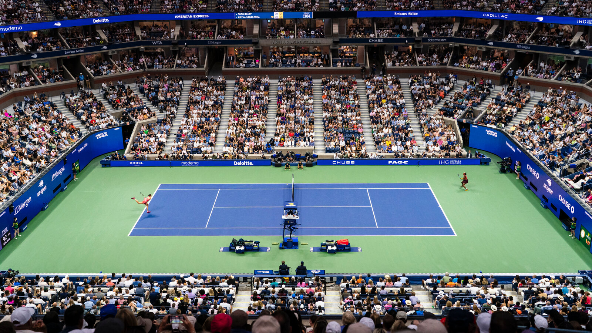
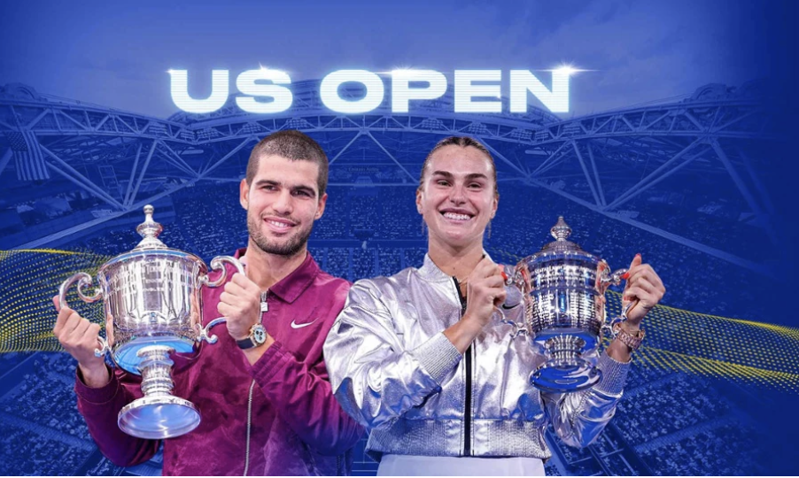
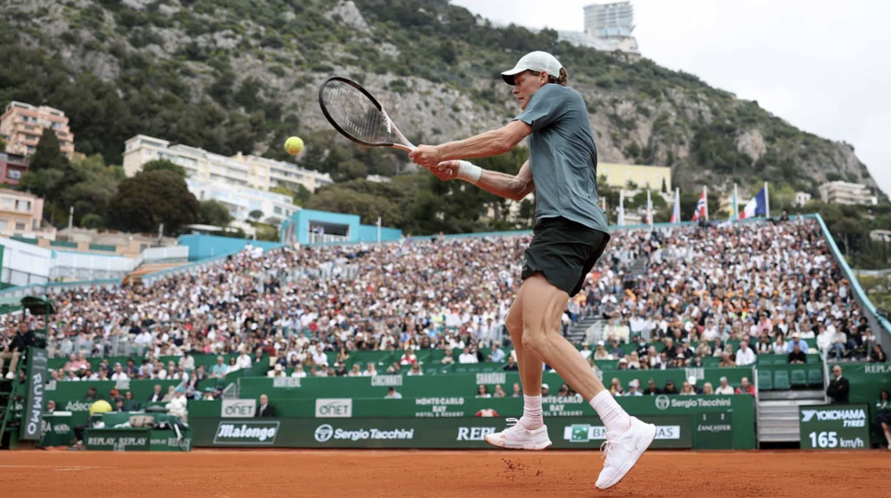
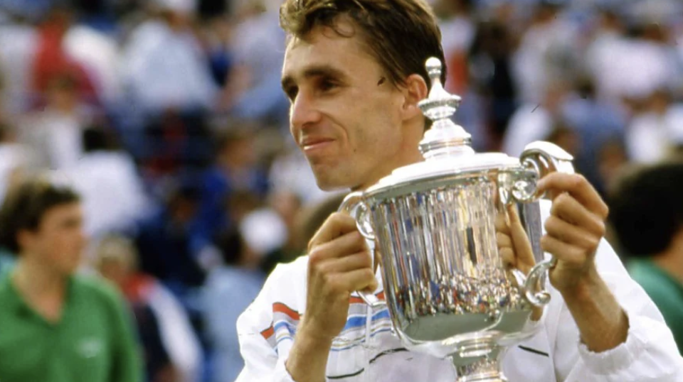
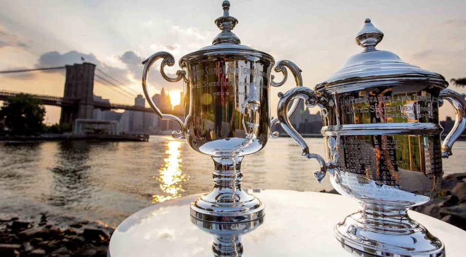
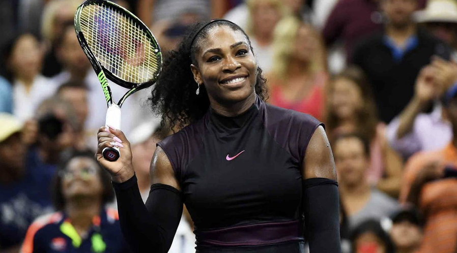

The US Open is an annual hardcourt tennis tournament, the fourth and final Grand Slam event of the year, held over two weeks in late August/early September in Queens, New York City. Organized by the USTA at the USTA Billie Jean King National Tennis Center since 1978, it features professional singles, doubles, and mixed doubles. Wikipedia


2025 US Open began with the new-look Mixed Doubles Championship and ended with a very familiar-looking men's singles final, the third consecutive Grand Slam title match between Carlos Alcaraz and Jannik Sinner. Ahead of the latest installment in what has fast become a generational rivalry, Alcaraz and Sinner underlined their status as the games leading men on the New York stage. Alcaraz reached the final without dropping a set-including a dominant semifinal win against Novak Djokovic-while Sinner lost just two sets in a machine-like march to the main draws third Sunday, following a historic Sunday start to the singles tournament.

Sinner stormed ahead of his rival by claiming three consecutive ATP Masters 1000 crowns, losing just one set in 17 match wins across Indian Wells, Miami and Monte Carlo. The three titles also take Sinner's trophy tally to 27, moving him ahead of Alcaraz on 26 US Open champion in 2024, Sinner has won 14 hard-court titles since 2024. While he was one point away from the ultimate clay crown last year at Roland Garros, where he famously missed out on three match points against Alcaraz, the Italian only had one clay title to his name prior to Monaco: a 2022 triumph at the ATP 250 in Umag. "I am very happy to win a big title on this surface. I haven't done it before and it means a lot to me," said Sinner, who admitted to being pleasantly surprised with his success. After losing to Alcaraz at the US Open, Sinner discussed the importance of adding variety and unpredictability to his game in order to keep pace with his rival. Though Alcaraz still leads the pair's head-to-head, 10-7, Sinner has now won two straight matches against his rival. His wins on the indoor hard courts of the 2025 ATP Finals and the outdoor clay of Monte Carlo showcase Sinner's evolution into a more versatile and complete player.

Figure 1

Figure 2

Figure 3
Figure 4